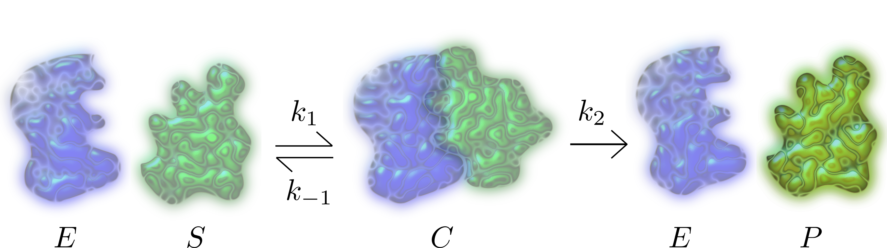
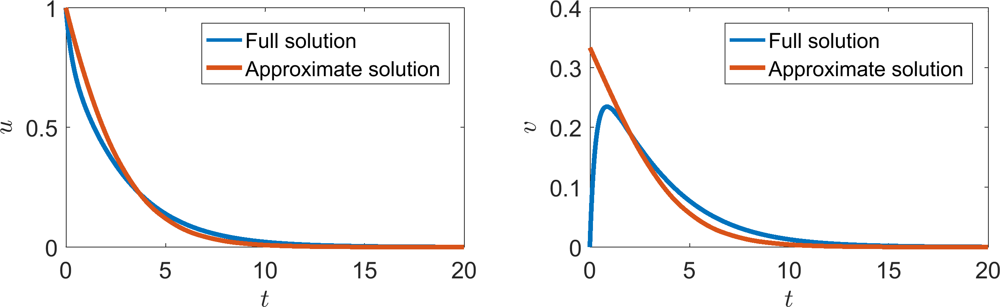
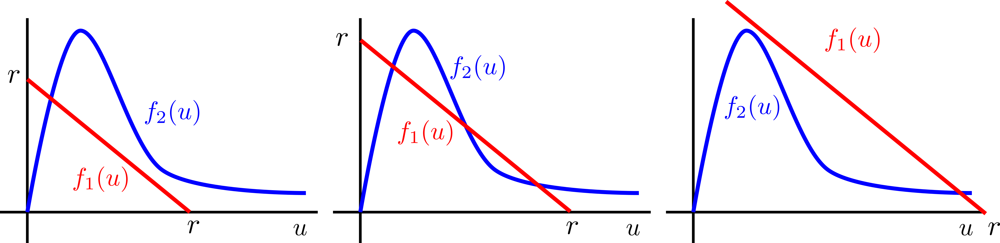
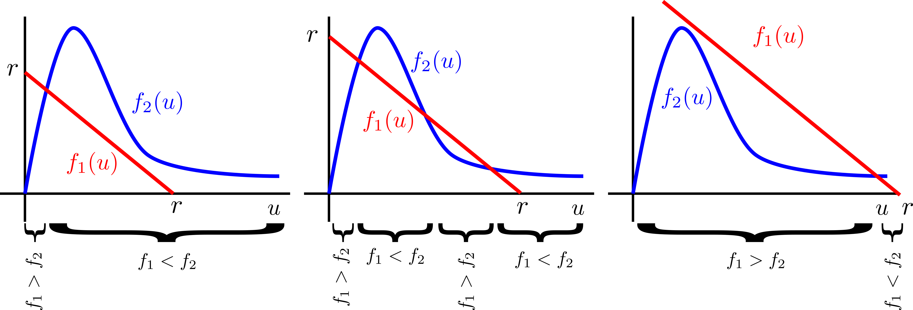

1. Michaelis-Menten Enzyme dynamics
Enzymes are biological molecules (typically proteins) that significantly speed up the rate of virtually all of the chemical reactions that take place within cells. They are vital for life and serve a wide range of important functions in the body, such as aiding in digestion and metabolism.

Schematic diagram of the Michaelis-Menten enzyme-substrate reaction.
In 1913 Leonor Michaelis and Maud Menten proposed a mathematical model of how enzymes work. The process involves an enzyme, \(E\), binding to a substrate, \(S\), to form a complex, \(C\), which in turn releases a product, \(P\), regenerating the original enzyme. This may be represented schematically as (see Figure 1)
\[E+S\mathrel{\mathop{\rightleftarrows}^{k_1}_{k_{-1}}}C\stackrel{k_2}{\rightarrow}E+P. \tag{1}\]
Use the Law of Mass Action to write down the ODE formulation of the dynamics. The initial conditions are
\[S(0) = S_0,\quad E(0) = E_0,\quad C(0) = 0,\quad P(0) = 0. \tag{2}\]
Show \(E+C=\)constant\(=E_0\).
Why can we ignore the equations for \(\dot{P}\) and \(\dot{E}\)? Specifically, show that we only need to consider the equations
\[\begin{align} \dot{S}&=-k_1(E_0-C)S + k_{-1}C,\tag{3}\\ \dot{C}&=k_1(E_0-C)S -( k_{-1}+k_2)C. \tag{4} \end{align}\]
Use the following scales to non-dimensionalise the equations
\[t=\frac{\tau}{k_1E_0},\quad S=u S_0,\quad C=v E_0, \tag{5}\]
to produce the following system
\[\begin{align} \frac{\text{ d}u}{\text{ d}\tau}&=-u+(u+K-\lambda)v,\tag{6}\\ \epsilon\frac{\text{ d}v}{\text{ d}\tau}&=u-(u+K)v. \tag{7} \end{align}\]
What are \(\epsilon\), \(\lambda\) and \(K\)? Show that \(\epsilon\), \(\lambda\) and \(K\) are non-dimensional.
What are the initial conditions?
Suppose \(E_0\ll S_0\) (what does this mean?) and so let \(\epsilon\rightarrow0\). Show that we can write \(v\) as a function of \(u\), which simplifies the \(\text{ d}u/\text{ d}\tau\) equation to
\[\frac{\text{ d}u}{\text{ d}\tau}=-u+(u+K-\lambda)\frac{u}{(u+K)}, \quad u(0)=1. \tag{8}\]
This is known as the system on the ‘outer’ time-scale.
Substitute the time scale \(\sigma=\tau/\epsilon\) into equations (6) and (7). Rearrange the system and, once again, let \(\epsilon \rightarrow 0\). You should be able to show that the solution of the system is
\[\begin{align} u(\sigma)&=1,\\ v(\sigma)&= \frac{1}{1+K}\left(1-\exp(-(1+K)\sigma)\right). \tag{9} \end{align}\]
This is known as the system on the ‘inner’ time-scale.
In questions 7-6 you have done a multiple scales simplification of the Michaelis-Menten problem. Namely, the whole equation is hard to solve. However, we can solve for what the equation looks like for small time, \(\sigma\) (question 7) and we can solve for what the equations look like for large time, question (6). In the computation question, which is next, we check these approximations.
Answers
\[\begin{align} \dot{E}&=-k_1ES+\left(k_{-1}+k_2\right)C,\\ \dot{S}&=-k_1ES+k_{-1} C,\\ \dot{C}&=k_1ES-\left(k_{-1}+k_2\right)C,\\ \dot{P}&=k_2C. \end{align}\]
\[\text{ d}\left(E+C\right)/\text{ d}t=0\implies E+C=\textrm{ constant }=E_0, \tag{10}\]
using the initial conditions.
\(\dot{P}\) depends on \(C\), but none of the other equations depend on \(P\), thus, \(\dot{P}\) decouples from the system, in that once we have solved the rest of the system we can produce \(P\) through integrating \(C\). This leaves equations for \(E\), \(S\) and \(C\). Using \(E+C=E_0\) we can eliminate \(E\) as well, leaving just equations for \(S\) and \(C\). Substituting in \(E=E_0-C\) we generate
\[\begin{align} \dot{S}&=-k_1(E_0-C)S + k_{-1}C,\tag{11}\\ \dot{C}&=k_1(E_0-C)S -( k_{-1}+k_2)C. \tag{12} \end{align}\]
We should find that
\[\begin{align} \epsilon&=\frac{E_0}{S_0},\\ \lambda&=\frac{k_2}{k_1S_0},\\ K&=\frac{k_{-1}+k_2}{k_1S_0}. \end{align}\]
The units are:
dim(\(\epsilon\))=density/density=1,
dim(\(\lambda\))=\(\frac{\textrm{1/time}}{1/(\textrm{density}\times \textrm{time}) \times \textrm{density}}=1=\)dim(\(K\)).
The initial conditions are \(u(0)=S_0/S_0=1\) and \(v(0)=0/E_0=0\).
\(E_0\ll S_0\) means that there is very little enzyme compared to substrate.
Setting \(\epsilon=0\) in equation (7) gives
\[0=u-(u+K)v\implies v=u/(u+K), \tag{13}\]
which can be substituted into equation (6) to produce
\[\frac{\text{ d}u}{\text{ d}\tau}=-u+(u+K-\lambda)u/(u+K),\quad u(0)=1.\tag{14}\]
On substituting \(\sigma=\tau/\epsilon\) into equations (6) and (7) we have
\[\begin{align} \frac{\text{ d}u}{\text{ d}\sigma}&=\epsilon\left(-u+(u+K-\lambda)v\right)\approx 0,\quad u(0)=1\tag{15}\\ \frac{\text{ d}v}{\text{ d}\sigma}&=u-(u+K)v\quad v(0)=0. \tag{16} \end{align}\]
Solving equation (15) provides \(u=1\), which is substituted into equation (16) to produce
\[\frac{\text{ d}v}{\text{ d}\sigma}=1-(1+K)v\quad v(0)=0. \tag{17}\]
Solving this equation gives the final answer
\[v(\sigma)= \frac{1}{1+K}\left(1-\exp(-(1+K)\sigma)\right). \tag{18}\]
2. Computer simulation
Let \(K=2\), \(\lambda=1\) and \(\epsilon=0.001\). Simulate
\[\begin{align} \frac{\text{ d}u}{\text{ d}\tau}&=-u+(u+K-\lambda)v, \quad u(0)=1\tag{19}\\ \epsilon\frac{\text{ d}v}{\text{ d}\tau}&=u-(u+K)v \quad v(0)=0. \tag{20} \end{align}\]
and
\[\frac{\text{ d}u}{\text{ d}\tau}=-u+(u+K-\lambda)u/(u+K),\quad u(0)=1. \tag{21}\]
with \(v=u/(u+K)\) over the time \(t\in[0,20]\). How well do these curves approximate each other?
Answer
The simulations are shown below.

Full and approximate solutions to the Michaelis-Menten problem.
3. Spruce budworm
Spruce budworm in moth and larval stages.
Spruce budworm (see Figure 3) are preyed upon by spiders, miscellaneous insects, and birds. A model for their population size, \(N\) is given by
\[\dot{N}=RN\left(1-\frac{N}{K}\right)-\frac{BN^2}{A^2+N^2}. \tag{22}\]
What does each term in the equation mean?
Describe, with a sketch, three properties of the predation term
\[\frac{BN^2}{A^2+N^2}. \tag{23}\]
Hint: consider low, medium and high values of \(N\).
Non-dimensionalise the equation to give the form
\[\frac{\text{ d}u}{\text{ d}\tau}=ru\left(1-\frac{u}{k}\right)-\frac{u^2}{1+u^2}. \tag{24}\]
What are the scales of the population and time in terms of \(A\), \(B\), \(K\) and \(R\)? What are the parameters \(r\), \(k\) in terms of \(A\), \(B\), \(K\) and \(R\)?
Show the population and time scales have the right dimension. Show that \(r\) and \(k\) are dimensionless.
Answers
\[\underbrace{\dot{N}}_{\textrm{Population evolution.}}=\underbrace{RN\left(1-\frac{N}{K}\right)}_{\textrm{Logistic growth, \emph{i.e.} linear growth with competition.}}-\underbrace{\frac{BN^2}{A^2+N^2}}_{\textrm{Predation effects.}}. \tag{25}\]
For low populations there is little predation. As the population grows, so does the predation. The predation saturates at large population sizes.
\[=A,\quad [t]=\frac{A}{B},\quad r=\frac{RA}{B},\quad k=\frac{K}{A}. \tag{26}\]
\(A\) has units of density, \(B\) has units of density/time, \(R\) has units of 1/time and \(K\) has units of density.
Substituting these into the scales in Section 4 we find that \([N]\) and \([t]\) have units of density and time, respectively, whilst \(r\) and \(k\) are dimensionless.
4. Spruce budworm population stability
You can find more about the spruce budworm population equation and an online applet that allows you to simulate the system quickly and easily at the following website:
\[https://mathinsight.org/spruce\_budworm\_outbreak\_model \tag{27}\]
The above website may aid in the following questions as we are going to consider the steady states of
\[\frac{\text{ d}u}{\text{ d}\tau}=ru\left(1-\frac{u}{k}\right)-\frac{u^2}{1+u^2}=f(u). \tag{28}\]
We could solve \(f(u)=0\), however, this leads to a cubic in \(u\). This can be solved, but it is not very fun. Instead, we are going to consider sketches of the system.
We could sketch \(f(u)\), directly, and draw arrows on the diagram, such that \(u\) is increasing if \(f(u)>0\) and \(u\) is decreasing if \(f(u)<0\). This will immediately tell us how many stationary states there are and inform us of their stability. We will do this towards the end of this question, however, going straight into the full sketch may cause us to miss certain cases, as we have two parameters, \(r\) and \(K\), to worry about. However, if you feel confident shoot straight to question 3.
Critically, the following questions only deal with sketches. Thus, you do not have to be exactly accurate in your plotted values. We just need to provide the general shape of the curve. This means little, if any, calculation should be required. Namely, an exact analytical result is not required, only approximate sketches backed up by logical thought.
By inspection \(u_0=0\) is always a steady state of \(f(u)\) (make sure you understand why). Instead of considering \(f(u)\) let us consider the two functions
\[f_1(u)=r\left(1-\frac{u}{k}\right),\quad f_2(u)=\frac{u}{1+u^2}. \tag{29}\]
Sketch \(f_2\) on three different axes. Fix the value of \(r/k\) to be greater than zero (say \(r/k=0.05\)), but allow \(r\) to vary (with \(k\) being defined by, say, \(k=0.05/r\)). Sketch on these three different plots \(f_1\) for different values of \(r\), namely consider \(r\) small, medium and large1
Draw on your above diagrams regions where \(f_1>f_2\) and regions where \(f_2>f_1\).
Noting that a steady state, \(u'\), satisfies
\[f(u')=0=u'(f_1(u')-f_2(u')), \tag{30}\]
use your sketches of \(f_1\) and \(f_2\) to plot three situations of \(f(u)\).
You should be able to show that (depending on the value of the parameters) there can be as few as two steady states and as many as 4 steady states. Name the four steady states \(0=u_0<u_-<u_s<u_+\), in the obvious way. Specify on your diagrams these four steady states. The sketch for a middling value of \(r\) is given in Figure 4.
Figure 4. Plots of \(f\) for a middling value of \(r\).
Use each sketch of \(f(u)\) to state the stability of each steady state, \(u_0\), \(u_-\), \(u_s\) and \(u_+\) (when they exist).
Does the system exhibit hysteresis? To solve this follow these steps:
start with a low value of \(r\), such that only \(u_0\) and \(u_-\) exist. Suppose we start with a small initial condition, where do you evolve to?
increase \(r\) until \(u_0\), \(u_-\), \(u_s\), \(u_+\) all exist, what happens to the point you evolve to?
increase \(r\) further until only \(u_0\) \(u_+\) exist, what happens to the point you evolve to?
decrease \(r\) until \(u_0\), \(u_-\), \(u_s\), \(u_+\) all exist, what happens to the point you evolve to?
is the point you evolve to in step b the same as the point you evolve to in step d? Use this to answer the original question.
Answer
\(u=0\) is a solution of \(f(u)=0\), thus, it is always a steady state. See Figure 5 for the sketches.

Plots of \(f_1\) and \(f_2\), for varying \(r\) and fixed \(r/k\). \(r\) increases left to right.
See Figure 6 for the sketches.

Plots of \(f_1\) and \(f_2\), for varying \(r\) and fixed \(r/k\). \(r\) increases left to right. The brackets along the \(u\) axis delineate the regions over which \(f_1>f_2\) and \(f_2>f_1\).
See Figure 7 for the sketches.
(a)
(b)
(c)
Three potential sketches of the spruce budworm phase plane depending on the parameter \(r\), with fixed \(r/k\). \(r\) increases left to right.
The steady states have been specified on Figure 7.
Using Figure 7 \(u_0\) is always unstable and always exists. \(u_-\) and \(u_+\) are always stable when they exist. \(u_s\) is always unstable when it exists.
when \(r\) is small only \(u_0\) and \(u_-\) exist and, so, the system will tend to \(u_-\).
as \(r\) increases \(u_s\) and \(u_+\) will appear, but \(u_-\) is still stable and so the system stays where it is, at \(u_-\).
for large \(r\) \(u_-\) disappears. The system then evolves to \(u_+\).
reducing \(r\) to the previous value brings back \(u_-\), but \(u_+\) still exists and is stable so the system stays at \(u_+\).
originally we were at \(u_-\); now we are at \(u_+\), even though we have reduced \(r\) back to the previous position. Since these are different steady states the model presents hysteresis.
Exam revision
5. Stability of a one-variable system
Consider the following equation
\[\dot{u}=u(1-u)^3(u-2)^2(3-u)(4-u). \tag{31}\]
What are the steady states?
Linearise around each steady state. Which steady states are stable and which are unstable? Why can you not categorise the stability of \(u=1\) and \(u=2\)?
Sketch the phase plane \((u,\dot{u})\) and show that your linear analysis tallies with the stability information gained from the sketch.
Use the sketch to categorise the stability of \(u=1\) and \(u=2\).
Answer
Steady states are \(u_s=0,1,2,3,4\).
For linear stability analysis we need to check the sign of \(\text{ d}f(u_s)/\text{ d}u\).
\[\frac{\text{ d}f}{\text{ d}u}=-2(u-1)^2(u-2)(4u^4-33u^3+88u^2-80u+12). \tag{32}\]
and, so,
\[\begin{align} \frac{\text{ d}f}{\text{ d}u}(0)&=48>0\\ \frac{\text{ d}f}{\text{ d}u}(1)&=0\\ \frac{\text{ d}f}{\text{ d}u}(2)&=0\\ \frac{\text{ d}f}{\text{ d}u}(3)&=24>0\\ \frac{\text{ d}f}{\text{ d}u}(4)&=-432<0. \end{align}\]
Thus, \(u_s=0,3\) are unstable, \(u_s=4\) is stable and we cannot categorise \(u_s=1,2\) because the equation has at least a double root at these points and, as such, the derivative evaluates to zero.
Figure 8 illustrates that \(u_s=0,2,3\) are unstable, whilst \(u_s=1,4\) are stable.
Phase plane plot of equation (31).
6. Infections
The interaction dynamics of any disease can be understood by modelling three sections of the population: the susceptible population, \(S\); the infected population, \(I\) and the recovered population, \(R\). They interact through the following rules:
whenever a susceptible agent interacts with an infective agent the result is two infective agents at a rate \(r_1\);
the infected population recovers at a rate proportional to the size of the infected population; the rate of proportionality is \(r_2\).
Finally, suppose that the initial densities of the susceptible and infectives are \(S_0\) and \(I_0\), respectively, and that there are no initially recovered people.
Convert the above rules into interaction equations.
Use the Law of Mass Action to convert the interaction equations into ODEs.
Show that \(S+I+R=\) constant \(=S_0+I_0\). What does this mean?
What are the dimensions of \(S\), \(I\), \(R\), \(\dot{S}\), \(\dot{I}\), \(\dot{R}\), \(r_1\) and \(r_2\) in terms of density and time?
Let \(S=[S]S'\), \(I=[I]I'\), \(R=[R]R'\) and \(t=[t]t'\) where the bracketed variable is the dimensional part and the primed variable is the non-dimensional part. Further, suppose we non-dimensionalise the system as
\[\begin{align} \dot{S'}&=-S'I',\quad S'(0)=S'_0,\\ \dot{I'}&=S'I'-I',\quad I'(0)=I'_0,\\ \dot{R'}&=I',\quad R'(0)=0, \end{align}\]
where the \(\dot{}\) symbol now stands for \(\text{ d}/\text{ d}t'\). What are the scales \([S]\), \([I]\), \([R]\) and \([t]\) in terms of \(r_1\) and \(r_2\)? Show that they have the right dimension, i.e. \([S]\) has the same dimension as \(S\), as specified in question 4.
What are the forms of \(S'_0\) and \(I'_0\) in terms of \(r_1\), \(r_2\), \(S_0\) and \(I_0\)?
By integrating
\[\frac{\text{ d}I'}{\text{ d}S'}=\frac{\dot{I}'}{\dot{S}'},\quad \frac{\text{ d}R'}{\text{ d}S'}=\frac{\dot{R}'}{\dot{S}'}, \tag{33}\]
find expressions for \(I'(S')\) and \(R'(S')\). Do not forget about the initial conditions.
Answers
\[\begin{align} S+I&\stackrel{r_1}{\rightarrow}2I,\tag{34}\\ I&\stackrel{r_2}{\rightarrow}R. \tag{35} \end{align}\]
\[\begin{align} \dot{S}&=-r_1SI,\quad S(0)=S_0,\tag{36}\\ \dot{I}&=r_1SI-r_2I,\quad I(0)=I_0,\tag{37}\\ \dot{R}&=r_2I,\quad R(0)=0. \tag{38} \end{align}\]
Adding equations (36)–(38) we get \(\text{ d}\left(S+I+R \right)/\text{ d}t=0\). Integrating and using the initial conditions produces the result \(S+I+R=S_0+I_0\). This means that the total number of humans is conserved, namely they are either susceptible, infected, or removed. There is no leakage from the system.
dim(\(S\))=dim(\(I\))=dim(\(R\))=density.
dim(\(\dot{S}\))=dim(\(\dot{I}\))=dim(\(\dot{R}\))=density/time.
dim(\(r_1\))=1/(density\(\times\)time).
dim(\(r_2\))=1/time.
Substituting \(S=[S]S'\), \(I=[I]I'\), \(R=[R]R'\) and \(t=[t]t'\), into the system we find that
\[\begin{align} \frac{[S]}{[t]}&=r_1[S][I],\tag{39}\\ \frac{[I]}{[t]}&=r_1[S][I]=r_2[I],\tag{40}\\ \frac{[R]}{[t]}&=r_2[I], \tag{41} \end{align}\]
from which we rapidly find that \([S]=[I]=[R]=r_2/r_1\) and \([t]=1/r_2\). Using the results from question 4 we find that \(r_2/r_1=\)density and \(1/r_2=\)time. Thus, units are consistent.
\(S'_0=S_0/[S]=r_1S_0/r_2.\)
\(I'_0=I_0/[I]=r_1I_0/r_2.\)
\[\begin{align} \frac{\text{ d}I'}{\text{ d}S'}=\frac{\dot{I'}}{\dot{S'}}&=1-\frac{1}{S'},\\ \frac{\text{ d}R'}{\text{ d}S'}=\frac{\dot{R'}}{\dot{S'}}&=\frac{1}{S'}, \end{align}\]
Integrating the above equations with initial conditions \(I'(S'_0)=I'_0\) gives
\[I'(S') = \log\left(\frac{S'}{S'_0}\right)+I'_0-S'+S'_0. \tag{42}\]
and
\[R'=-\log\left(\frac{S'}{S'_0}\right). \tag{43}\]